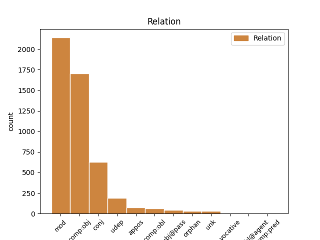
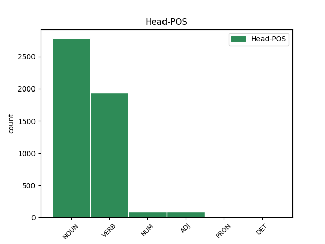
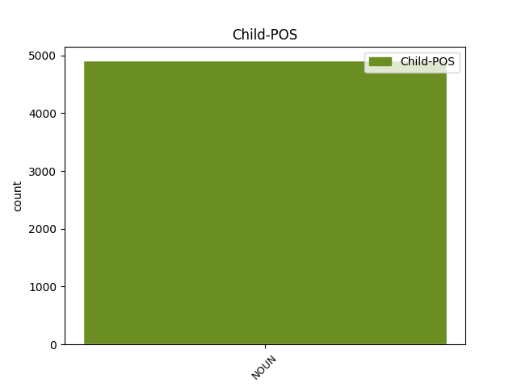

Distribution of features within this leaf



Agreement Rules sorted by frequency.
- When the dependent token is the direct object complements(comp:obj) of the head token, and the head token is VERB and the dependent token is NOUN.
1 Paravojenské _ _ _ _ 0 _ _ _
2 oddiely _ _ _ _ 0 _ _ _
3 pritom _ _ _ _ 0 _ _ _
4 zabíjali zabíjať VERB VLepci+ Animacy=Inan|Aspect=Imp|Gender=Masc|Number=Plur|Polarity=Pos|Tense=Past|VerbForm=Part 0 _ _ _
5 a _ _ _ _ 0 _ _ _
6 vyháňali _ _ _ _ 0 _ _ _
7 nesrbských _ _ _ _ 0 _ _ _
8 civilistov civilista NOUN SSmp4 Animacy=Anim|Case=Acc|Gender=Masc|Number=Plur 4 comp:obj _ SpaceAfter=No
9 . _ _ _ _ 0 _ _ _
1 Drsný _ _ _ _ 0 _ _ _
2 koniec koniec NOUN SSis1 Animacy=Inan|Case=Nom|Gender=Masc|Number=Sing 0 _ _ _
3 srbského _ _ _ _ 0 _ _ _
4 " _ _ _ _ 0 _ _ _
5 partizána partizán NOUN SSms2 Animacy=Anim|Case=Gen|Gender=Masc|Number=Sing 2 mod _ SpaceAfter=No
6 " _ _ _ _ 0 _ _ _
1 Príslušníka príslušník NOUN SSms4 Animacy=Anim|Case=Acc|Gender=Masc|Number=Sing 0 _ _ _
2 vojenskej _ _ _ _ 0 _ _ _
3 polície _ _ _ _ 0 _ _ _
4 , _ _ _ _ 0 _ _ _
5 poľovníka poľovník NOUN SSms4 Animacy=Anim|Case=Acc|Gender=Masc|Number=Sing 1 conj _ _
6 a _ _ _ _ 0 _ _ _
7 manželský _ _ _ _ 0 _ _ _
8 pár _ _ _ _ 0 _ _ _
9 v _ _ _ _ 0 _ _ _
10 stredných _ _ _ _ 0 _ _ _
11 rokoch _ _ _ _ 0 _ _ _
12 . _ _ _ _ 0 _ _ _
1 Keď _ _ _ _ 0 _ _ _
2 zistil _ _ _ _ 0 _ _ _
3 , _ _ _ _ 0 _ _ _
4 že _ _ _ _ 0 _ _ _
5 je _ _ _ _ 0 _ _ _
6 obkľúčený _ _ _ _ 0 _ _ _
7 a _ _ _ _ 0 _ _ _
8 má _ _ _ _ 0 _ _ _
9 sa _ _ _ _ 0 _ _ _
10 vzdať _ _ _ _ 0 _ _ _
11 , _ _ _ _ 0 _ _ _
12 zabil zabiť VERB VLdscm+ Animacy=Anim|Aspect=Perf|Gender=Masc|Number=Sing|Polarity=Pos|Tense=Past|VerbForm=Part 0 _ _ _
13 sa _ _ _ _ 0 _ _ _
14 ručným _ _ _ _ 0 _ _ _
15 granátom granát NOUN SSis7 Animacy=Inan|Case=Ins|Gender=Masc|Number=Sing 12 udep _ SpaceAfter=No
16 . _ _ _ _ 0 _ _ _
1 K _ _ _ _ 0 _ _ _
2 tomu _ _ _ _ 0 _ _ _
3 sa _ _ _ _ 0 _ _ _
4 podávalo podávať VERB VLescn+ Aspect=Imp|Gender=Neut|Number=Sing|Polarity=Pos|Tense=Past|VerbForm=Part 0 _ _ _
5 trnkové _ _ _ _ 0 _ _ _
6 víno víno NOUN SSns1 Case=Nom|Gender=Neut|Number=Sing 4 subj@pass _ _
7 a _ _ _ _ 0 _ _ _
8 deťom _ _ _ _ 0 _ _ _
9 ponúkli _ _ _ _ 0 _ _ _
10 fialovú _ _ _ _ 0 _ _ _
11 malinovku _ _ _ _ 0 _ _ _
12 . _ _ _ _ 0 _ _ _
1 Potom _ _ _ _ 0 _ _ _
2 začul _ _ _ _ 0 _ _ _
3 ďalší _ _ _ _ 0 _ _ _
4 zvuk zvuk NOUN SSis4 Animacy=Inan|Case=Acc|Gender=Masc|Number=Sing 0 _ _ _
5 — _ _ _ _ 0 _ _ _
6 ľudské _ _ _ _ 0 _ _ _
7 hlasy hlas NOUN SSip4 Animacy=Inan|Case=Acc|Gender=Masc|Number=Plur 4 appos _ SpaceAfter=No
8 ! _ _ _ _ 0 _ _ _
1 Zrazu _ _ _ _ 0 _ _ _
2 však _ _ _ _ 0 _ _ _
3 vyšľahli _ _ _ _ 0 _ _ _
4 obrovské _ _ _ _ 0 _ _ _
5 plamene _ _ _ _ 0 _ _ _
6 a _ _ _ _ 0 _ _ _
7 vyrazili vyraziť VERB VLdpci+ Animacy=Inan|Aspect=Perf|Gender=Masc|Number=Plur|Polarity=Pos|Tense=Past|VerbForm=Part 0 _ _ _
8 princovi princ NOUN SSms3 Animacy=Anim|Case=Dat|Gender=Masc|Number=Sing 7 comp:obl _ _
9 štít _ _ _ _ 0 _ _ _
10 z _ _ _ _ 0 _ _ _
11 ruky _ _ _ _ 0 _ _ _
12 . _ _ _ _ 0 _ _ _
1 Tu _ _ _ _ 0 _ _ _
2 boli _ _ _ _ 0 _ _ _
3 zvyknutí zvyknutý ADJ Gtmp1x Animacy=Anim|Case=Nom|Degree=Pos|Gender=Masc|Number=Plur|Polarity=Pos|VerbForm=Part|Voice=Pass 0 _ _ _
4 vyberané _ _ _ _ 0 _ _ _
5 spôsoby spôsob NOUN SSip1 Animacy=Inan|Case=Nom|Gender=Masc|Number=Plur 3 comp:obj _ _
6 a _ _ _ _ 0 _ _ _
7 správali _ _ _ _ 0 _ _ _
8 sa _ _ _ _ 0 _ _ _
9 podľa _ _ _ _ 0 _ _ _
10 spoločenských _ _ _ _ 0 _ _ _
11 pravidiel _ _ _ _ 0 _ _ _
12 . _ _ _ _ 0 _ _ _
1 Príslušníka _ _ _ _ 0 _ _ _
2 vojenskej _ _ _ _ 0 _ _ _
3 polície _ _ _ _ 0 _ _ _
4 , _ _ _ _ 0 _ _ _
5 poľovníka poľovník NOUN SSms4 Animacy=Anim|Case=Acc|Gender=Masc|Number=Sing 0 _ _ _
6 a _ _ _ _ 0 _ _ _
7 manželský _ _ _ _ 0 _ _ _
8 pár pár NOUN SSis4 Animacy=Inan|Case=Acc|Gender=Masc|Number=Sing 5 orphan _ _
9 v _ _ _ _ 0 _ _ _
10 stredných _ _ _ _ 0 _ _ _
11 rokoch _ _ _ _ 0 _ _ _
12 . _ _ _ _ 0 _ _ _
1 Mám _ _ _ _ 0 _ _ _
2 osem _ _ _ _ 0 _ _ _
3 nôh _ _ _ _ 0 _ _ _
4 , _ _ _ _ 0 _ _ _
5 osem osem NUM NUns4 Case=Acc|Gender=Neut|Number=Sing 0 _ _ _
6 očí oko NOUN SSnp2 Case=Gen|Gender=Neut|Number=Plur 5 mod _ _
7 a _ _ _ _ 0 _ _ _
8 sedem _ _ _ _ 0 _ _ _
9 chutí _ _ _ _ 0 _ _ _
10 . _ _ _ _ 0 _ _ _
1 “ _ _ _ _ 0 _ _ _
2 Mimozemšťania mimozemšťan NOUN SSmp1 Animacy=Anim|Case=Nom|Gender=Masc|Number=Plur 5 unk _ SpaceAfter=No
3 , _ _ _ _ 0 _ _ _
4 “ _ _ _ _ 0 _ _ _
5 zašepkal zašepkať VERB VLdscm+ Animacy=Anim|Aspect=Perf|Gender=Masc|Number=Sing|Polarity=Pos|Tense=Past|VerbForm=Part 0 _ _ _
6 Rudko _ _ _ _ 0 _ _ _
7 vystrašene _ _ _ _ 0 _ _ _
8 . _ _ _ _ 0 _ _ _
1 Vláda _ _ _ _ 0 _ _ _
2 urýchli _ _ _ _ 0 _ _ _
3 a _ _ _ _ 0 _ _ _
4 finančne _ _ _ _ 0 _ _ _
5 posilní _ _ _ _ 0 _ _ _
6 zákonom zákon NOUN SSis7 Animacy=Inan|Case=Ins|Gender=Masc|Number=Sing 7 udep _ _
7 regulovaný regulovaný ADJ Gtis4x Animacy=Inan|Case=Acc|Degree=Pos|Gender=Masc|Number=Sing|Polarity=Pos|VerbForm=Part|Voice=Pass 0 _ _ _
8 proces _ _ _ _ 0 _ _ _
9 vysporiadania _ _ _ _ 0 _ _ _
10 vlastníctva _ _ _ _ 0 _ _ _
11 pôdy _ _ _ _ 0 _ _ _
12 a _ _ _ _ 0 _ _ _
13 pripraví _ _ _ _ 0 _ _ _
14 komasáciu _ _ _ _ 0 _ _ _
15 a _ _ _ _ 0 _ _ _
16 proces _ _ _ _ 0 _ _ _
17 definitívneho _ _ _ _ 0 _ _ _
18 doriešenia _ _ _ _ 0 _ _ _
19 vydávania _ _ _ _ 0 _ _ _
20 náhradných _ _ _ _ 0 _ _ _
21 pozemkov _ _ _ _ 0 _ _ _
22 . _ _ _ _ 0 _ _ _
1 Ocitla _ _ _ _ 0 _ _ _
2 sa _ _ _ _ 0 _ _ _
3 v _ _ _ _ 0 _ _ _
4 spleti _ _ _ _ 0 _ _ _
5 úzkych _ _ _ _ 0 _ _ _
6 uličiek _ _ _ _ 0 _ _ _
7 , _ _ _ _ 0 _ _ _
8 ktoré _ _ _ _ 0 _ _ _
9 sa _ _ _ _ 0 _ _ _
10 ponášali _ _ _ _ 0 _ _ _
11 ako _ _ _ _ 0 _ _ _
12 vajce vajce NOUN SSns1 Case=Nom|Gender=Neut|Number=Sing 0 _ _ _
13 vajcu vajce NOUN SSns3 Case=Dat|Gender=Neut|Number=Sing 12 unk _ SpaceAfter=No
14 . _ _ _ _ 0 _ _ _
1 U _ _ _ _ 0 _ _ _
2 ugrofínskych _ _ _ _ 0 _ _ _
3 národov _ _ _ _ 0 _ _ _
4 fungoval _ _ _ _ 0 _ _ _
5 orol orol NOUN SSms1 Animacy=Anim|Case=Nom|Gender=Masc|Number=Sing 0 _ _ _
6 ako _ _ _ _ 0 _ _ _
7 predok predok NOUN SSms1 Animacy=Anim|Case=Nom|Gender=Masc|Number=Sing 5 comp:pred _ _
8 a _ _ _ _ 0 _ _ _
9 ochranca _ _ _ _ 0 _ _ _
10 šamanov _ _ _ _ 0 _ _ _
11 . _ _ _ _ 0 _ _ _
1 Bola _ _ _ _ 0 _ _ _
2 presadzovaná presadzovaný ADJ Gtfs1x Case=Nom|Degree=Pos|Gender=Fem|Number=Sing|Polarity=Pos|VerbForm=Part|Voice=Pass 0 _ _ _
3 hlavne _ _ _ _ 0 _ _ _
4 sovietskou _ _ _ _ 0 _ _ _
5 marxistickou _ _ _ _ 0 _ _ _
6 historiografiou historiografia NOUN SSfs7 Case=Ins|Gender=Fem|Number=Sing 2 comp:obl@agent _ SpaceAfter=No
7 . _ _ _ _ 0 _ _ _
1 Keď _ _ _ _ 0 _ _ _
2 na _ _ _ _ 0 _ _ _
3 mňa _ _ _ _ 0 _ _ _
4 pozrel _ _ _ _ 0 _ _ _
5 a _ _ _ _ 0 _ _ _
6 usmial _ _ _ _ 0 _ _ _
7 sa _ _ _ _ 0 _ _ _
8 , _ _ _ _ 0 _ _ _
9 pripadala _ _ _ _ 0 _ _ _
10 som _ _ _ _ 0 _ _ _
11 si _ _ _ _ 0 _ _ _
12 krásna _ _ _ _ 0 _ _ _
13 , _ _ _ _ 0 _ _ _
14 zbožňovaná zbožňovaný ADJ Gtfs1x Case=Nom|Degree=Pos|Gender=Fem|Number=Sing|Polarity=Pos|VerbForm=Part|Voice=Pass 0 _ _ _
15 a _ _ _ _ 0 _ _ _
16 múdra múdry NOUN SSfs1 Case=Nom|Gender=Fem|Number=Sing 14 conj _ SpaceAfter=No
17 . _ _ _ _ 0 _ _ _
1 U _ _ _ _ 0 _ _ _
2 nás _ _ _ _ 0 _ _ _
3 jeme _ _ _ _ 0 _ _ _
4 to to DET PFns4 Case=Acc|Gender=Neut|Number=Sing|PronType=Dem 0 _ _ _
5 , _ _ _ _ 0 _ _ _
6 čo _ _ _ _ 0 _ _ _
7 sa _ _ _ _ 0 _ _ _
8 objedná _ _ _ _ 0 _ _ _
9 cez _ _ _ _ 0 _ _ _
10 donášku _ _ _ _ 0 _ _ _
11 alebo _ _ _ _ 0 _ _ _
12 mrazené _ _ _ _ 0 _ _ _
13 jedlá jedlo NOUN SSnp4 Case=Acc|Gender=Neut|Number=Plur 4 conj _ SpaceAfter=No
14 , _ _ _ _ 0 _ _ _
15 “ _ _ _ _ 0 _ _ _
16 povedal _ _ _ _ 0 _ _ _
17 Chris _ _ _ _ 0 _ _ _
18 . _ _ _ _ 0 _ _ _
1 Od _ _ _ _ 0 _ _ _
2 chvíle _ _ _ _ 0 _ _ _
3 , _ _ _ _ 0 _ _ _
4 keď _ _ _ _ 0 _ _ _
5 ho _ _ _ _ 0 _ _ _
6 uväznili _ _ _ _ 0 _ _ _
7 , _ _ _ _ 0 _ _ _
8 nepoznal _ _ _ _ 0 _ _ _
9 , _ _ _ _ 0 _ _ _
10 čo _ _ _ _ 0 _ _ _
11 je _ _ _ _ 0 _ _ _
12 tma _ _ _ _ 0 _ _ _
13 a _ _ _ _ 0 _ _ _
14 čo čo PRON PFns1 Case=Nom|Gender=Neut|Number=Sing|PronType=Int,Rel 0 _ _ _
15 denné _ _ _ _ 0 _ _ _
16 svetlo svetlo NOUN SSns1 Case=Nom|Gender=Neut|Number=Sing 14 orphan _ SpaceAfter=No
17 . _ _ _ _ 0 _ _ _
1 Z _ _ _ _ 0 _ _ _
2 toho _ _ _ _ 0 _ _ _
3 človeka _ _ _ _ 0 _ _ _
4 nevravel vravieť VERB VLesci- Animacy=Inan|Aspect=Imp|Gender=Masc|Number=Sing|Polarity=Neg|Tense=Past|VerbForm=Part 0 _ _ _
5 mozog _ _ _ _ 0 _ _ _
6 , _ _ _ _ 0 _ _ _
7 ale _ _ _ _ 0 _ _ _
8 hrtan hrtan NOUN SSis1 Animacy=Inan|Case=Nom|Gender=Masc|Number=Sing 4 conj _ SpaceAfter=No
9 . _ _ _ _ 0 _ _ _
1 Keďže _ _ _ _ 0 _ _ _
2 som _ _ _ _ 0 _ _ _
3 neprišiel _ _ _ _ 0 _ _ _
4 na _ _ _ _ 0 _ _ _
5 nič nič PRON PFns4 Case=Acc|Gender=Neut|Number=Sing|PronType=Neg 0 _ _ _
6 lepšie lepšie NOUN SSns4 Case=Acc|Gender=Neut|Number=Sing 5 mod _ SpaceAfter=No
7 , _ _ _ _ 0 _ _ _
8 sedel _ _ _ _ 0 _ _ _
9 som _ _ _ _ 0 _ _ _
10 celý _ _ _ _ 0 _ _ _
11 deň _ _ _ _ 0 _ _ _
12 vo _ _ _ _ 0 _ _ _
13 svojej _ _ _ _ 0 _ _ _
14 izbe _ _ _ _ 0 _ _ _
15 a _ _ _ _ 0 _ _ _
16 v _ _ _ _ 0 _ _ _
17 duchu _ _ _ _ 0 _ _ _
18 som _ _ _ _ 0 _ _ _
19 si _ _ _ _ 0 _ _ _
20 predstavoval _ _ _ _ 0 _ _ _
21 , _ _ _ _ 0 _ _ _
22 že _ _ _ _ 0 _ _ _
23 som _ _ _ _ 0 _ _ _
24 ušiel _ _ _ _ 0 _ _ _
25 z _ _ _ _ 0 _ _ _
26 domu _ _ _ _ 0 _ _ _
27 . _ _ _ _ 0 _ _ _
1 Bol _ _ _ _ 0 _ _ _
2 to _ _ _ _ 0 _ _ _
3 pochmúrny _ _ _ _ 0 _ _ _
4 deň _ _ _ _ 0 _ _ _
5 , _ _ _ _ 0 _ _ _
6 oblaky _ _ _ _ 0 _ _ _
7 viseli _ _ _ _ 0 _ _ _
8 nízko _ _ _ _ 0 _ _ _
9 , _ _ _ _ 0 _ _ _
10 smerom smer NOUN SSis7 Animacy=Inan|Case=Ins|Gender=Masc|Number=Sing 0 _ _ _
11 k _ _ _ _ 0 _ _ _
12 močiaru močiar NOUN SSis3 Animacy=Inan|Case=Dat|Gender=Masc|Number=Sing 10 comp:obj _ _
13 udierali _ _ _ _ 0 _ _ _
14 blesky _ _ _ _ 0 _ _ _
15 . _ _ _ _ 0 _ _ _
1 Ak _ _ _ _ 0 _ _ _
2 nemôže _ _ _ _ 0 _ _ _
3 dostať _ _ _ _ 0 _ _ _
4 Belu _ _ _ _ 0 _ _ _
5 on _ _ _ _ 0 _ _ _
6 , _ _ _ _ 0 _ _ _
7 nedostane _ _ _ _ 0 _ _ _
8 ju _ _ _ _ 0 _ _ _
9 nikto nikto PRON PFms1 Animacy=Anim|Case=Nom|Gender=Masc|Number=Sing|PronType=Neg 0 _ _ _
10 , _ _ _ _ 0 _ _ _
11 ani _ _ _ _ 0 _ _ _
12 človek človek NOUN SSms1 Animacy=Anim|Case=Nom|Gender=Masc|Number=Sing 9 appos _ _
13 ani _ _ _ _ 0 _ _ _
14 zviera _ _ _ _ 0 _ _ _
15 . _ _ _ _ 0 _ _ _
1 O _ _ _ _ 0 _ _ _
2 čo _ _ _ _ 0 _ _ _
3 krajší _ _ _ _ 0 _ _ _
4 bol _ _ _ _ 0 _ _ _
5 začiatok _ _ _ _ 0 _ _ _
6 dňa _ _ _ _ 0 _ _ _
7 , _ _ _ _ 0 _ _ _
8 o _ _ _ _ 0 _ _ _
9 to _ _ _ _ 0 _ _ _
10 horší zlý ADJ AAis1y Animacy=Inan|Case=Nom|Degree=Cmp|Gender=Masc|Number=Sing 0 _ _ _
11 koniec koniec NOUN SSis1 Animacy=Inan|Case=Nom|Gender=Masc|Number=Sing 10 unk _ SpaceAfter=No
12 . _ _ _ _ 0 _ _ _
Disagree Examples:
1 Spustili spustiť VERB VLdpcm+ Animacy=Anim|Aspect=Perf|Gender=Masc|Number=Plur|Polarity=Pos|Tense=Past|VerbForm=Part 0 _ _ _
2 novú _ _ _ _ 0 _ _ _
3 internetovú _ _ _ _ 0 _ _ _
4 televíziu televízia NOUN SSfs4 Case=Acc|Gender=Fem|Number=Sing 1 comp:obj _ _
5 Braňa _ _ _ _ 0 _ _ _
6 Krála _ _ _ _ 0 _ _ _
1 Do _ _ _ _ 0 _ _ _
2 slovenských _ _ _ _ 0 _ _ _
3 častí _ _ _ _ 0 _ _ _
4 Uhorska _ _ _ _ 0 _ _ _
5 sa _ _ _ _ 0 _ _ _
6 vtedy _ _ _ _ 0 _ _ _
7 utiahla _ _ _ _ 0 _ _ _
8 jedna _ _ _ _ 0 _ _ _
9 časť časť NOUN SSfs1 Case=Nom|Gender=Fem|Number=Sing 0 _ _ _
10 českých _ _ _ _ 0 _ _ _
11 emigrovaných _ _ _ _ 0 _ _ _
12 protestantov protestant NOUN SSmp2 Animacy=Anim|Case=Gen|Gender=Masc|Number=Plur 9 mod _ _
13 a _ _ _ _ 0 _ _ _
14 tu _ _ _ _ 0 _ _ _
15 našli _ _ _ _ 0 _ _ _
16 v _ _ _ _ 0 _ _ _
17 používaní _ _ _ _ 0 _ _ _
18 svoj _ _ _ _ 0 _ _ _
19 vlastný _ _ _ _ 0 _ _ _
20 spisovný _ _ _ _ 0 _ _ _
21 jazyk _ _ _ _ 0 _ _ _
22 presne _ _ _ _ 0 _ _ _
23 tak _ _ _ _ 0 _ _ _
24 , _ _ _ _ 0 _ _ _
25 ako _ _ _ _ 0 _ _ _
26 vo _ _ _ _ 0 _ _ _
27 svojej _ _ _ _ 0 _ _ _
28 českej _ _ _ _ 0 _ _ _
29 vlasti _ _ _ _ 0 _ _ _
30 . _ _ _ _ 0 _ _ _
1 Podľa _ _ _ _ 0 _ _ _
2 princípu princíp NOUN SSis2 Animacy=Inan|Case=Gen|Gender=Masc|Number=Sing 0 _ _ _
3 siedmich _ _ _ _ 0 _ _ _
4 slobodných _ _ _ _ 0 _ _ _
5 umení umenie NOUN SSnp2 Case=Gen|Gender=Neut|Number=Plur 2 mod _ _
6 prvým _ _ _ _ 0 _ _ _
7 stupňom _ _ _ _ 0 _ _ _
8 trivia _ _ _ _ 0 _ _ _
9 je _ _ _ _ 0 _ _ _
10 gramatika _ _ _ _ 0 _ _ _
11 . _ _ _ _ 0 _ _ _
1 Podľa _ _ _ _ 0 _ _ _
2 princípu _ _ _ _ 0 _ _ _
3 siedmich _ _ _ _ 0 _ _ _
4 slobodných _ _ _ _ 0 _ _ _
5 umení _ _ _ _ 0 _ _ _
6 prvým _ _ _ _ 0 _ _ _
7 stupňom stupeň NOUN SSis7 Animacy=Inan|Case=Ins|Gender=Masc|Number=Sing 0 _ _ _
8 trivia trivium NOUN SSns2 Case=Gen|Gender=Neut|Number=Sing 7 mod _ _
9 je _ _ _ _ 0 _ _ _
10 gramatika _ _ _ _ 0 _ _ _
11 . _ _ _ _ 0 _ _ _
1 Európska _ _ _ _ 0 _ _ _
2 únia únia NOUN SSfs1 Case=Nom|Gender=Fem|Number=Sing 0 _ _ _
3 , _ _ _ _ 0 _ _ _
4 čiže _ _ _ _ 0 _ _ _
5 rozmieňanie rozmieňanie NOUN SSns1 Case=Nom|Gender=Neut|Number=Sing 2 appos _ _
6 veľkých _ _ _ _ 0 _ _ _
7 bankoviek _ _ _ _ 0 _ _ _
8 na _ _ _ _ 0 _ _ _
9 drobné _ _ _ _ 0 _ _ _
10 mince _ _ _ _ 0 _ _ _
11 . _ _ _ _ 0 _ _ _